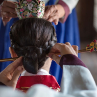

전통혼례
전통혼례
전통혼례 소개
Traditional Wedding
전통혼례의 의미
남녀가 부부의 인연을 맺는 것을 결혼이라 하지 않고 혼인(婚姻)이라 한 까닭은 무엇일까요? 혼(婚)이란 여자의 집이란 뜻으로, 남자가 여자에게 장가든다는 말입니다. 인(姻)은 여자가 의지하는 곳이란 뜻으로 남자의 집을 가리킵니다. 혼(婚)이 장가 간다는 뜻의 글자가 된 까닭은 저녁때(昏)에 남자가 여자의 집으로 가서 신랑을 맞는 행위가 여자 집에서 이뤄졌기 때문입니다. 후한 때 유희(劉熙)가 저술한 『석명 (釋名)』에도 “혼(婚)이란 예를 어두울 때 올리는 것을 말함이요. 인 (姻)이란 여자가 음이라 어둡기 때문이다”라며 혼인은 저녁때 하는 것이라 정의하였습니다. 오늘날에는 결혼(結婚) 이라는 말을 많이 씁니다. 결론부터 말하자면 결혼은 잘못된 표현입니다. 남녀가 부부가 되는 일을 결혼이라 한다면, 남자가 여자에게 장가가는 꼴이 되기 때문입니다. 여자는 단지 거기에 곁 붙어서 따라가는 모양새이기에 남자가 장가 간다는 뜻만 있기에 이는 남존여비 사상이 묻어 있다 하겠습니다. 그래서 우리나라의 민법에서도 결혼이라는 말 대신 ‘혼인’이라고 쓰고 있습니다.
전통혼례의 정신
우리 전통혼례에서는 혼인을 인륜지대사라 하여 부모와 하늘과 배우자에게 서약하는 "삼서정신"과 함께 남편과 아내는 지위나 나이에 차별 없이 모든 면에서 평등해 진다는 "평등정신"을 기본으로 두고 부부간의 예를 갖추었습니다. 따라서 우리 혼례에서는 이러한 의미로써 혼례 때 부부가 서로 마주보고 배우자를 공경하고 존중하는 마음으로 부부간에 큰 절을 합니다.
"삼서정신(三誓精神)"
- 1. 서 부모(誓父母)
- 신랑과 신부가 혼인예식을 거행하기 전에 부모에게 서약을 하는 것입니다.
- 2. 서 천지(誓天地)
- 혼인이 천지의 음양이치, 즉 대자연의 섭리에 순응하는 것이므로
음양의 상징이며 자연의 절대자인 하늘과 땅에 대해 서약하는 것입니다. - 3. 서 배우(誓配偶)
- 신랑 신부 서로가 배우자에게 서약하는 것입니다.
전통혼례 절차
-
- 혼담
- 청혼과 허혼이 이루어짐
-
- 납채
- 혼약이 이루어져 신랑측에서 사주를 보내 혼인 날짜를 청함
-

- 연길
- 신부측에서 혼례 기일을 정해 신랑 측에 보냄
-
- 납폐
- 신랑 측에서 신부 측에 예물을 함에 넣어 보냄
-
- 대례
- 신랑이 신부 집에 가서 혼례를 치르는 예로서
지금의 혼례식의 의미를 가짐
-
- 우귀
- 대례 후 신부를 맞아 신랑 집으로 감
대례 절차
대례는 전안례(奠雁禮), 교배례(交拜禮), 합근례(合卺禮)의 순서로 행하여 집니다.
| 의례식순 | 전통성년례 (관례, 계례) |
|---|---|
| 전안례(奠雁禮) | 전안례란 신랑이 기러기를 신부 댁에 전달하면서 혼인에 대한 승낙을 구하는 절차입니다. 기러기는 안정(雁情)과 안서(雁序), 안적(雁跡)의 세가지 덕목을 지니고 있다고 하여 기러기와 같이 의리와 덕목을 갖추라는 의미를 담고 있습니다. |
| 교배례(交拜禮) | 부부 간에 서로 맞절로서 백년가약을 약속하고 서약을 하는 의식입니다. 우리 전통혼례에서는 혼인을 인륜지대사라 하여 부모와 하늘과 배우자에게 서약을 하는 ‘삼서정신’과 함께 남편과 아내는 모든 면에서 평등하다는 ‘평등정신’을 기본으로 두고 부부간의 예를 갖추었습니다. |
| 합근례(合卺禮) | 합근례란 신랑과 신부가 표주박 잔에 술을 따라 마시는 의례로서 하나의 박이 두 개의 바가지로 나뉘었다가 원 자리로 돌아와 하나가 되었음을 선언하는 의식으로 비로소 신랑 신부가 하나가 됨을 상징하고 부부의 인연을 맺어 부부의 도리를 다하겠다는 뜻을 담고 있습니다. |